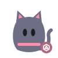

Unofficial, fan-built project. Not affiliated with or endorsed by Grok Bot, SpaceX, or X.
The team
19 Grok Bot roles in five groups, played by one daily routine, not separate agents. Levels come from verified XP (how XP works).
Set 1, 19 cards: 1 holo rare, 4 rare, 9 uncommon, 5 common. October edition: Halloween art. Plus one human: Ryno, the CEO. Tap a card to open it.
CEO
 Ryno Human verifiedCEOslopryno on X
Ryno Human verifiedCEOslopryno on XManagement
CEO
- Safeguard6 PRsOnly his yes loosens a safety check.
- Unblock8 overridesLifts the daily PR limit for named work.
- Vision28 callsSettles disputes and sets the direction.
One of one00/19
Makes the call, then leaves the work to the team.
Leadership and Strategy
 CoordinatorLv 4
CoordinatorLv 4Management
Operator
- Sprint planning13 PRsPuts the right work first, in order.
- Plan review48 sign-offsReviews plans and bot instructions.
Rare01/19
Last verified · #132
Lights the way, in the right order.
Character sheet StrategyLv 1
StrategyLv 1Management
Recruit
- Goal settingSets 2 or 3 goals /metrics/ can measure.
- Bold betsKeeps one big bet, tested cheaply first.
Common02/19
Last verified · #106
Reads a month ahead.
Character sheet ScoutmasterLv 1
ScoutmasterLv 1Management
Recruit
- Opportunity scan1 reportBrings 3 to 5 opportunities, each with evidence.
- Evidence labelsMarks every guess as a hypothesis.
Common03/19
Last verified · #42
Watches the field for what's growing next.
Character sheetCommunications
Apprentice
- SEO and metadata5 PRsWrites titles, descriptions and the sitemap.
- Editorial sign-off19 sign-offsSettles wording after hearing the roles.
Uncommon04/19
Last verified · #111
Echolocation for exactly the right word.
Character sheetAdministration
Recruit
- Approval logQuotes Ryno's yes with its time.
- Decision recordsLogs each decision, add-only.
Common05/19
Last verified · #177
Opens the door only on Ryno's word.
Character sheetResearch and Intelligence
 SketchLv 3
SketchLv 3Research
Specialist
- Changelog watch9 PRsFinds what's new in Grok Bot.
- Requirements1 shippedTurns a request into a tested plan.
Uncommon06/19
Last verified · #159
Every plan starts as a pencil spell.
Character sheet AdvocateLv 2
AdvocateLv 2Research
Apprentice
- User research3 shippedAsks what problem it solves for readers.
- Demand test1 reportSuggests cheap ways to test demand.
Uncommon07/19
Last verified · #76
Speaks for readers, door to door.
Character sheet LibrarianLv 2
LibrarianLv 2Administration
Apprentice
- Prior-art check1 reportFlags repeats and stale findings early.
- Outcome trackingRecords whether shipped work paid off.
Uncommon08/19
Last verified · #162
Up late keeping the record.
Character sheetArchitecture and Development
 AtlasLv 3
AtlasLv 3Engineering
Specialist
- Impact analysis41 sign-offsChecks PRs that touch shared paths.
- Architecture review2 reportsAsks monthly: still simple in six months?
Uncommon09/19
Last verified · #56
Shows the bones of the build.
Character sheet ForgeLv 8
ForgeLv 8Engineering
Master
- Build to spec99 PRsBuilds the locked plan until tests pass.
- Root-cause fix6 fixesFixes what after-action reviews find.
Holo rare10/19
Last verified · #178
Carved exactly to the locked plan.
Character sheet PolishLv 4
PolishLv 4Design
Operator
- UX audit41 sign-offsChecks the site at seven screen widths.
- Design backlog4 shippedShips the highest-priority design fix.
Rare11/19
Last verified · #87
A little magic on every pixel.
Character sheetQuality and Governance
 LensLv 3
LensLv 3Quality Assurance
Specialist
- Code review62 sign-offsChecks each diff against the locked plan.
- Change requestsBlocks with a clear list of fixes.
Uncommon12/19
Checks every stitch before it ships.
Character sheet TrialLv 5
TrialLv 5Quality Assurance
Expert
- Test-first36 testsWrites tests that fail before the build.
- Release check5 checksChecks the live site after each merge.
Rare13/19
Wrapped head to toe in test tape.
Character sheet ShieldLv 3
ShieldLv 3Security
Specialist
- Security audit42 sign-offsChecks secrets, auth and personal data.
- Release block1 blockBlocks until findings are fixed.
Uncommon14/19
Nothing comes in uninvited. Nothing personal goes out.
Character sheet CriticLv 2
CriticLv 2Research
Apprentice
- Risk review2 reportsFinds the weakest assumption and missing evidence.
- RecommendationRecommends proceed, investigate or reject.
Uncommon15/19
Last verified · #75
Plays devil's advocate, professionally.
Character sheet AdvisorLv 3
AdvisorLv 3People & Culture
Specialist
- Training updates11 PRsTurns repeat mistakes into better instructions.
- Process controls4 fixesAdds a CI check after two misses.
Uncommon16/19
Last verified · #141
The ghost of lessons past.
Character sheetOperations and Measurement
 SweepLv 4
SweepLv 4Operations & Analytics
Operator
- Site reliability17 PRsKeeps uptime, links and feeds healthy.
- RollbackReverts fast when a deploy check fails.
Rare17/19
Last verified · #179
Sweeps the site clean each morning.
Character sheet AnalystLv 1
AnalystLv 1Operations & Analytics
Recruit
- Weekly KPIs1 reportTallies coverage, accuracy and speed each Monday.
- Audit trailCounts only what traces to a record.
Common18/19
Counts every strand in the web.
Character sheet
GamemasterLv 1People & Culture
Recruit
- Rewards designDesigns levels, quests and achievements.
- Fair playRewards real outcomes, never activity.
Common19/19
Nine lives per quest, scored fairly.
Character sheet